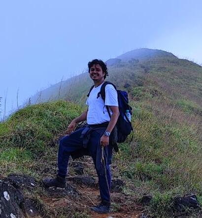
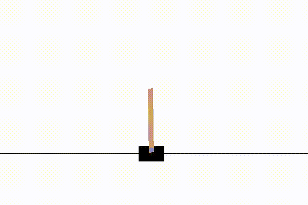
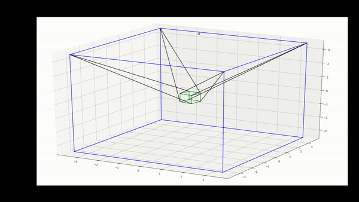
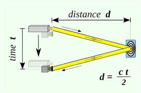
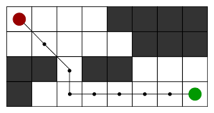

|
I am a software development engineer at Times Internet in Noida, where I work as Backend Developer. At Times internet I have worked on Enterprise Java Application based on spring framework. I graduated from IIT Delhi with major in Production and Industrial Engineering and minor in robotics |
 |
{kind=link}
|
I'm interested in robotics, computer vision, reinforcement learning and software development. I have done some projects related to these fields and would love to contribute to more of it. |
|  |
Policy Gradient algorithms on gym environments
Leveraged gym environment and pytorch framework to implement REINFORCE policy gradient algorithm and its variants, advantage normalization, and PPO for multiple enivironments(discrete and continous spaces) i.e. cartpole, inverted pendulum and half-cheetah. Compared PPO algorithm with vanilla policy gradient and advantage normalization under different testbeds and achieved avg score of 500 for half-cheetah and monotonic improvement under PPO score vs training step graph for ppo algorithm with neural network as baseline for variance reduction. source code for project |

|
DQN on MinAtar Breakout
Coded DQN algorithm with 2 separate neural networks as action-value function approximators and random memory-replay to play minAtar breakout game, achieved average score of 17.5 in 1 million training steps. Contrasted the DQN algorithm with linear function approximators vs that of neural net and found saturation in linear case while neural network performed 8-10 times better with monotonic growth. scores vs training epochs for dqn algorithm with function approximator as neural network source code for project |
|  |
Cable Driven Parallel Manipulator
Ideated and build a 3D model of cable driven manipulator for increased workspace, payload handling and dynamic response. Simulated the model in Mujuco, Solidworks and Gazebo with different cable modelling strategies and Compared for accuracy Integrated gym environment for training imitation RL model on this manipulator for imitating the behaviour of agent’s trajectory |

|
Gesture Based Pick and Place
Did POC on simulating pick and place scenario with Niryo robot in a warehouse with various objects in Gazebo, Unity for speed Integrated ROS publisher and subscriber framework in Unity for getting the sending the positions of objects to pick in ros-msg Created a library of different shapes of objects for instantiating in Unity environment and implemented mouse pointer location based gesture recognition of object initial and final position and thus, optimal trajectory estimation for robot |
|  |
ToF (Time of flight) sensor based 3-D scanner
built a 3D-object scanner by interfacing ToF (VL53L0X), IMU (MPU6050) sensors with Raspberry Pi. Designed a unique prototype of the scanner in Solidworks and converted to URDF for simulating in Gazebo using ROS framework. Calibrated sensors using least squares for bias removal and collected depth information from a programmed rotating platform. Enforced Complimentary filter algorithm to fuse data of accelerometer and gyroscope to achieve accuracy and denoise data. Used SLAM techniques for estimation of position of the scanner and accounted for dead-reckoning while determining position. |
|  |
Path planning using A* algorithm in ROS
Wrote a node to find the shortest path using A* and euclidean distance as heuristics for Simultaneous Localization and Mapping Used this as a plugin in gazebo simulator for the navigation of turtlebot (using ros framework) in a mapped environment Given multiple goals,created an optimal path for the robot from source to destination in real-time and simulated in gazebo |
{kind=link}
{kind=link}
|
|
|
Feel free to steal this website's source code. |